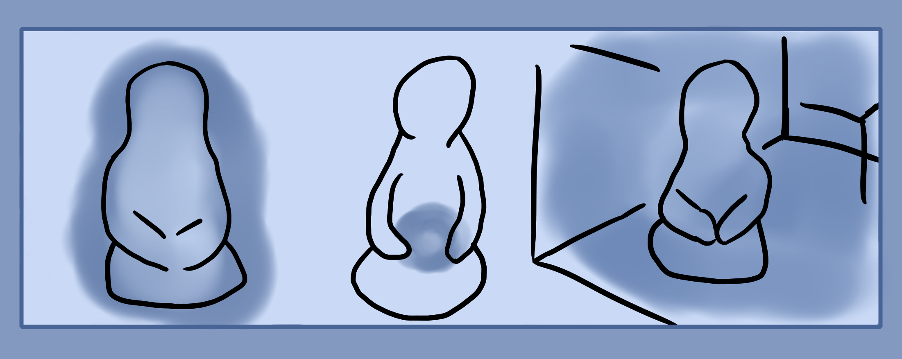

There are three basic meditations here that are done with each basic elemental quality. The exercises are to fill your body and aura, to fill a room and to create a sphere or orb of each element.
These meditations challenge your internal and external imagination as well as develop your ability to create something else than shapes and basic geometry.
Above are three pictures to show the meditations.
Elemental Meditation
This meditation will be done firstly with the space element or pure etheric energy. Practice later with the other elements. Do note that this is an imaginary exercise but it may produce subtle effects on reality.
First, start off by sitting in a meditative position. In a chair or couch at your desk or table is fine. Focus on your entire body. Feel as though your whole body is shrouded in an aura of mental focus. Let it be loose enough that the focus emanates outward of your body a little. This is the etheric aura. It shrouds the entire body and penetrates it. This aura is of the space element, similarly to how you also have a heat and air aura(bodily smell).
Intensify this aura. Feel how it radiates outwards. The etheric aura can be seen in moonlight or by holding your hand infront of a single colored wall. You can also cover objects in it temporarily.
Once you've grown comfortable with a simple aura, start using the other elements. Fire is to feel heat or visualizing fire, water is feeling coldness or seeing liquidity, air is lightness and rushing movement, earth is stability and heaviness(Gravity). So essentially practice using temperature from hot to cold and gravity from heavy to light.
Elemental Meditation 2
Meditation two is similar to the first but instead of forming an aura inside and around your body you're forming a sphere in your hands.
Start by holding your hands out in a relaxed manner. As if you were holding a basketball just above your lap and hands around belly level. Perform the first elemental meditation if you need to recall what your aura feels like or as a warmup. Then either draw out that energy from your aura or create it purely within the space of your hands and start to capture/contain it within a sphere in your hands. I like to feel as though I'm holding a ball, really focus in on the sensations as if you were holding one and then intensify the aura until you can feel a vibration or pressure, air, etc.
Try it with different elements like in the past meditation. An example for fire is to try feel heat. Focus on the real sensations of heat, visualize a fire that is burning your hands. If you get good at this it'll create real heat measurable on a thermometer, similarly with creating cold, pressure and other interesting real magical phenomena.
Elemental Meditation 3
Now it is time to fill an entire room with elemental force. Start by focusing in the whole room around you. Expand your focus to each wall and corner. You can also create a geometrical box or whatever shape the room is and project it around you, overlaying the shape of the room you're in. Fill it full of your aura, either expand it out from your body or manifest it out of the rooms space as if the rooms energy is leaking/condensing with power. Hold this for a few minutes until you get comfortable with it.
This exercise helps you with expanding your mental focus and magical aura far outside of your body. If you were to create a large barrier around a house or forest then this kind of practice will help you out.
Make sure to practice with the other elements as well in order to improve you skills. If you're able to create a strong enough effect that either others or yourself notices a difference when you walk into that room compared to other rooms then you've gained some good ability.